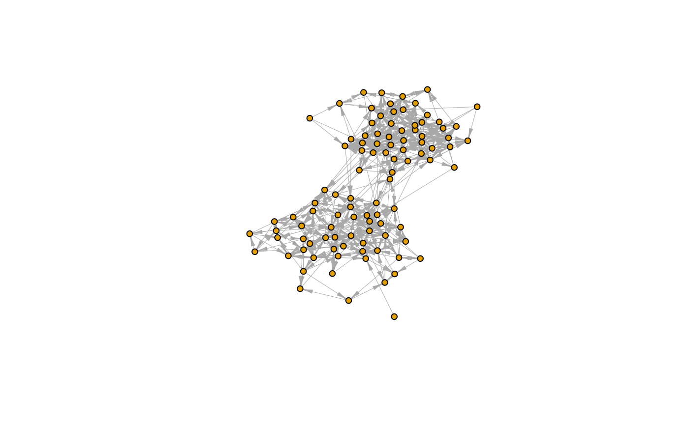
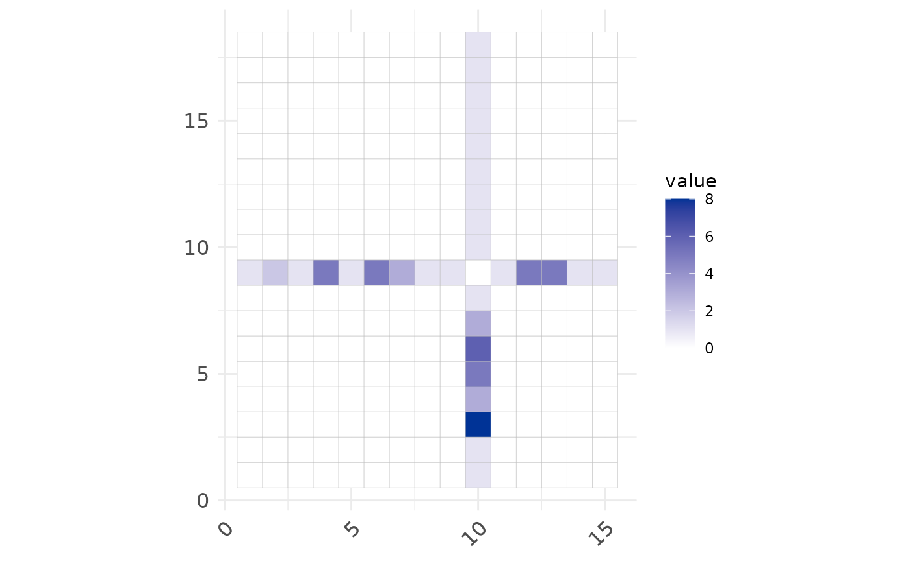

Introduction to vimure
quick_start.RmdThe goal of vimure is to make available latent network models to account for noisy, multiply-reported social network Data.
library(vimure)
library(igraph)
#>
#> Attaching package: 'igraph'
#> The following objects are masked from 'package:stats':
#>
#> decompose, spectrum
#> The following object is masked from 'package:base':
#>
#> union
library(ggcorrplot)
#> Loading required package: ggplot2Generate synthetic data
First create an object with the desired synthetic network class:
net <- gm_Multitensor(N=100, M=100, L=1, C=2, K=2, avg_degree=10, seed=24, sparsify=T, eta=0.5)
#> Loaded vimure version
# Ground Truth Network
Y <- net$Y$toarray()
layer <- 1 # Change to plot others layers for multiply-layers networks
graph <- graph_from_adjacency_matrix(Y[layer, , ], mode = "directed")
graph <- set_graph_attr(graph, "layout", layout_with_fr(graph, niter=600))
plot(graph,
vertex.size=5,
vertex.label=NA,
edge.width=0.5,
edge.arrow.size=0.5,
edge.arrow.width=0.5)
Python interface
vimure is a R binding of a Python package. Many Python basic objects are quickly converted to R automatically. Custom Python objects that can not be converted automatically are stored in R as a python.builtin.object. As a python.builtin.object, you can access all object’s attributes as it is in Python using the dollar sign $.
Use the function class to check if a object is stored in Python.
class(net)
#> [1] "vimure.synthetic.Multitensor"
#> [2] "vimure.synthetic.StandardSBM"
#> [3] "vimure.synthetic.BaseSyntheticNetwork"
#> [4] "vimure.io.BaseNetwork"
#> [5] "python.builtin.object"net is stored as a Python object. You can access its attributes using the dollar sign $.
net$Y # still a python object because it is a sptensor
#> <sktensor.sptensor.sptensor object at 0x7f1c0fd2da60>
Y <- net$Y$toarray() # Convert to array
class(Y)
#> [1] "array"Calculate some network statistics from the adjacency matrix:
message(
"Nodes: ", length(V(graph)),
" | Edges: ", gsize(graph),
" | Avg. degree: ", mean(degree(graph)), #directed graph,
" | Reciprocity: ", reciprocity(graph)
)
#> Nodes: 100 | Edges: 452 | Avg. degree: 9.04 | Reciprocity: 0.442477876106195Then, given a network Y, we can generate N observed adjacency matrices as would have been reported by reporting nodes \(m\) for \(m \in N\) This is achieved by the function build_X. Example:
Use the code below to explore the network from the point of view of different reporting nodes:
reporter_id <- 31
message("Reporter ID=", reporter_id," | theta= ", net$theta[layer, reporter_id])
#> Reporter ID=31 | theta= 3.5318623440758
X_current <- X[layer,,,reporter_id]
X_current <- X_current[rowSums(X_current[,-1]) != 0, colSums(X_current[-1,]) != 0]
ggcorrplot( X_current) +
ggplot2::scale_fill_gradient(low="white",high="#003396")
#> Scale for 'fill' is already present. Adding another scale for 'fill', which
#> will replace the existing scale.
Run model
In R we can construct and fit the vimure model by using the vimure function. The vimure function inherit all arguments from the original VimudeModel class and VimureModel.fit(). See more info about arguments in help(vimure).
In R, the vimure takes as data input an adjancency matrix or an igraph object.
model <- vimure(net$X, net$R, mutuality=T, K=2, num_realisations=5, max_iter=1000)Note: Run model without mutuality is not particularly useful since we know this network has some level of reciprocity and mutuality. We are doing this for testing purposes only.
Diagnostics
Use summary to produce result summaries of the results of the model. The output of summary is a R list that contains vimure’s priors and posteriors and more. You can access the results to plot and analyse the final model. Open an issue in our repository to make request new metrics in summary.
diag <- summary(model)
#> ---------------
#> - DIAGNOSTICS -
#> ---------------
#>
#> Model: ViMuRe(T)
#>
#> Priors:
#> - eta: shp=0.50 rte=1.00
#> - theta: shp=0.10 rte=0.10
#> - lambda: shp=10.0 rte=10.0
#> - rho: a (1, 100, 100, 2) tensor (to inspect it, run <diag_obj>.model.pr_rho)
#>
#> Posteriors:
#> - G_exp_lambda_f: [[1.39739329e-03 1.51388039e+00]]
#> - G_exp_nu_f: 0.71
#> - G_exp_theta_f: a (1, 100) tensor (to inspect it, run <diag_obj>.model.G_exp_theta_f)
#> - rho_f: a (1, 100, 100, 2) tensor (to inspect it, run <diag_obj>.model.rho_f)
#>
#> Optimisation:
#>
#> Elbo: 948.405678749585Inferred model
Use get_inferred_model() and sample_inferred_model() to reconstruct the Y matrix using the distribution of rho_f.
Y_hat <- get_inferred_model(model)
# Compared Y_hat to ground truth Y
table(Y_hat,Y)
#> Y
#> Y_hat 0 1
#> 0 9333 301
#> 1 215 151